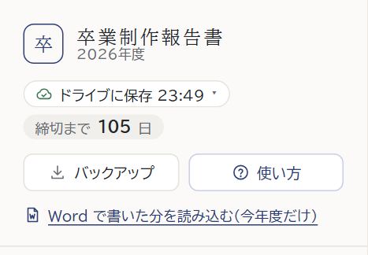
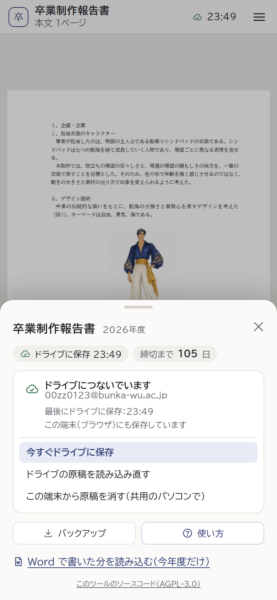
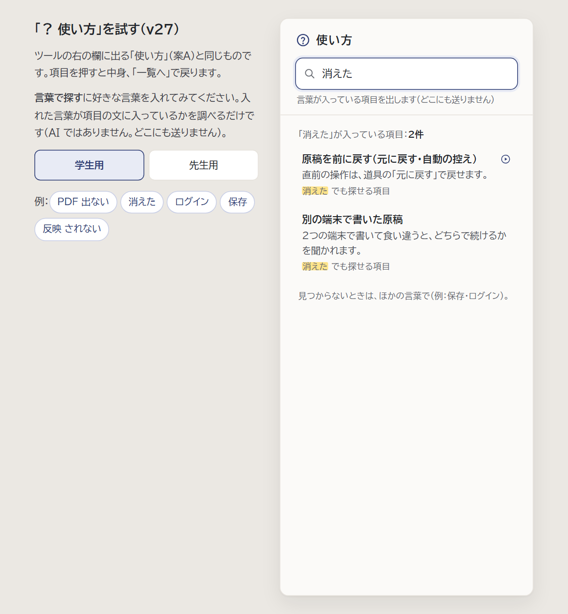

PC：右の欄の上
スマホ：メニュー（右上の ≡）言葉で探すの例：「PDF 出ない」と入れると、両方の言葉が入っている項目（PDF の出し方・下書きの PDF）を先に、片方だけの項目をその下に出します。入っている言葉には黄色の印。
全角・半角や大文字・小文字の違いはそろえます（「ＰＤＦ」でも見つかる）。言い方の違い（「出ない」と「出せない」など）は、項目ごとに「よく使われる言い方」を足しておきます。
help-try.html で、好きな言葉を入れて試せます（右の画像）。

試す画面（help-try.html）：「消えた」と入れたところ